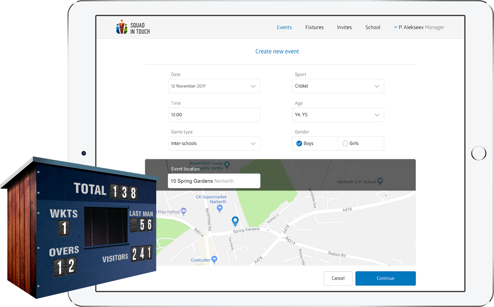
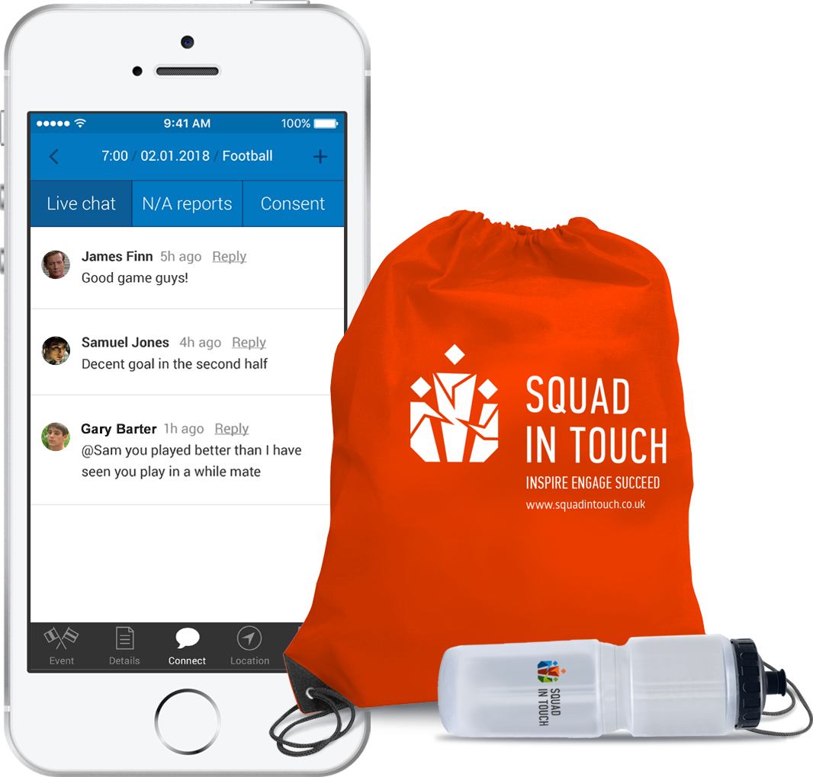

Kids and youth sports development platform
supported by the team of Olympians.
Make sport fun again.
“We have been using Squad in Touch now since September 2017. The biggest benefit to
all the staff within the department is that it simply saves time whilst improving
parental contact. Fixtures can quickly be entered onto the calendar and team sheets
very quickly made. This can include sending confirmation to parents/carers regarding
the fixture and details. Read more..."
Mr Peter Walters, Head of PE, The Priory School, Shrewsbury
“We have been using Squad in Touch now since September 2017. The biggest benefit to
all the staff within the department is that it simply saves time whilst improving
parental contact. Fixtures can quickly be entered onto the calendar and team sheets
very quickly made. This can include sending confirmation to parents/carers regarding
the fixture and details. I strongly believe that Squad in Touch will benefit all
schools who use it and I have found that they are very open and accommodating to
suggestions for further developments.”
Mr Peter Walters, Head of PE, The Priory School, Shrewsbury
Sports Stars Inspiration Day
Helping develop PE and Sport through Inspiration,
Aspiration and Engagement.
“Brendan gave an inspirational assembly to students in Years 7 and 8
during
which he gave invaluable advice about how to set goals,
dream big and work hard, even in the face of adversity.
Brendan then spent time working with them on a variety of different
physical
activities throughout the day.”
Matt Bowden
PE Teacher, William Edwards School, Essex
“Brendan gave an inspirational assembly to students in Years 7 and 8
during
which he gave invaluable advice about how to set goals,
dream big and work hard, even in the face of adversity.
Brendan then spent time working with them on a variety of different
physical
activities throughout the day.”
Spend your time doing sport.
Allow Squad In Touch to take care of the rest.
Squad In Touch helps PE teachers:
• Organise their fixtures calendar
• Keep records of pupils performance and discipline up to date
• Communicate with parents and pupils
• Improve PE practice; getting in touch with other PE teachers and our team of Olympians

Schools
A sustainable sports software solution created to help you
develop and manage your PE strategy and inspire the next generation
Squad In Touch helps schools:
• Save money and staff time
• Increase the number of young people taking part in competitions
• Promote healthy lifestyle among your pupils
• Broaden participation opportunities
• Increase community engagement
• Develop positive school/parent relationships
• Provide engaging and successful environment for pupils, parents and staff
Parents
Don’t JUST read results,
IMPROVE results with our Olympians advice.
With Squad In Touch parents are provided with:
• 24 Hour access to the fixtures calendar, tables and reports
• One touch booking for after school clubs
• Free app to help support their child and share photos of events
• Child’s performance and progress tracking
• Tools for communicating with school PE staff and other parents

Students
Get socialised around your sport life.
Keep in touch with your squad.
With Squad In Touch, students are provided with:
• 24 Hour access to the fixtures calendar, tables and reports
• Track your performance and progress
• Tools for communicating with school PE staff and other students
• Free app to share photos of events
• Manage school details, school forms, houses and pupils list
• Manage the fixtures calendar, extra-curricular clubs and mini-tournaments
• Input game results, as well as pupil’s individual performance and discipline scores
• Communicate with parents and students sending messages, consent requests and
notifications
• Keep your school sports news up to date
• Modern design, including a photo gallery on the landing page
• Highlighted events in the focus
• School sport news
• All pupils details are hidden for data protection
• School fixtures calendar, game results, reports and photos are published
automatically
• See your school fixtures calendar
• Input game results and match reports from the pitch
• See your pupil’s emergency contact details even when internet connection is
unavailable
• Get notified about pupils unavailability to take part
• Send notifications to parents and students about last minutes changes
• See a personalised fixtures calendar
• See game results and match reports in real time
• Track performance in favourite sports
• Get notified about last minutes changes
• Send availability reports and respond to consent requests anytime, anywhere
• Communicate with school PE staff as well as other parents and students
• Well designed group results and finals pages
• Game results presented automatically once submitted
• Dedicated website for each event hosted on Squad In Touch servers for free
• Detailed results for each school which participated
• Printable and email-adjusted PDFs with overall tournament results
• Modern design, photo gallery on the landing page
• Seasonal tables are published automatically once game results are submitted
• Highlighted events in the focus
• SSP sport news
• Dedicated website for each event hosted on Squad In Touch servers for free
Testimonials
Independent Schools Association
"Squad in Touch are a pleasure to work with. They are always willing to try and
adapt their
system to meet the users needs and make it as user friendly as possible.
The team are quick and responsive and very knowledgeable in their field.
Their results base is very aesthetically pleasing and makes searching for results
quick and
easy."
— Richard Stedeford, Laura Blatherwick, ISA National Sports Coordinators
Melbourne Junior School
"We are delighted with Squad In Touch at Melbourne Junior School. They could not have
been more
helpful in explaining how it works and accommodating our specific school's
requirements in the
set-up process. Read more..."
— Jim Jenkinson, PE & School Sport Coordinator, Melbourne Junior School
John Talbot's School
"Squad in Touch provides everything we need to organise school teams and clubs
easily.
Anything that is not a feature can be sorted out effectively and the support we have
been given setting this up has been great. This really is one of the best platforms
out there to promote school sport and the time saving potential alone is worth the
subscription fee"
— Jack Brown, Subject Leader for PE, Sir John Talbot's School
The Priory School
“We have been using Squad in Touch now since September 2017. The biggest benefit to
all the staff within the department is that it simply saves time whilst improving
parental contact. Fixtures can quickly be entered onto the calendar and team sheets
very quickly made. This can include sending confirmation to parents/carers regarding
the fixture and details. Read more..."
— Mr Peter Walters, Head of PE, The Priory School, Shrewsbury
Chichester Free School
"This will be the second Academic Year that we have been using Squad In Touch. It has
been a great help to our school, especially for aiding us in the communication with
parents. Squad In Touch saves our staff a lot of time spent on fixtures and
extra-curricular clubs management and makes our life easier through using
notifications, availability reports and parental consent e-forms. Our PE staff can
focus on teaching whilst parents and pupils are always kept up to date. "
— Steve Day, Head of PE, Chichester Free School
Testimonials
Independent Schools Association
"Squad in Touch are a pleasure to work with. They are always
willing to try and adapt their
system to meet the users needs and make it as user friendly as possible.
The team are quick and responsive and very knowledgeable in their field.
Their results base is very aesthetically pleasing and makes searching for results quick and
easy."
— Richard Stedeford, Laura Blatherwick, ISA National Sports Coordinators
Melbourne Junior School
"We are delighted with Squad In Touch at Melbourne Junior School.
They could not have been more
helpful in explaining how it works and accommodating our specific school's requirements in
the
set-up process. Read more.."
— Jim Jenkinson, PE & School Sport Coordinator, Melbourne Junior School
John Talbot's School
"We are delighted with Squad In Touch at Melbourne Junior School.
"Squad in Touch provides everything we need to organise school teams and clubs easily.
Anything that is not a feature can be sorted out effectively and the support we have been
given setting this up has been great. This really is one of the best platforms out there to
promote school sport and the time saving potential alone is worth the subscription fee"
— Jack Brown, Subject Leader for PE, Sir John Talbot's School
The Priory School
“We have been using Squad in Touch now since September 2017. The
biggest benefit to all the staff within the department is that it simply saves time whilst
improving parental contact. Fixtures can quickly be entered onto the calendar and team
sheets
very quickly made. This can include sending confirmation to parents/carers regarding the
fixture and details. I strongly believe that Squad in Touch will benefit all schools who use
it and I have found that they are very open and accommodating to suggestions for further
developments.”
— Mr Peter Walters, Head of PE, The Priory School, Shrewsbury
Chichester Free School
"This will be the second Academic Year that we have been using
Squad In Touch. It has been a great help to our school, especially for aiding us in the
communication with parents. Squad In Touch saves our staff a lot of time spent on fixtures
and extra-curricular clubs management and makes our life easier through using notifications,
availability reports and parental consent e-forms. Our PE staff can focus on teaching whilst
parents and pupils are always kept up to date. "
— Steve Day, Head of PE, Chichester Free School
“I am a Double Olympian and PE teacher but to my 3 children I am Dad.
Through conversations I have had with elite sportsmen there is an agreement.
The most important thing you can do as a parent to help your child succeed is to simply
show support and encouragement.
As a parent Squad In Touch allows me to show this support for my children and as
a teacher Squad In Touch allows me to select teams quicker and manage my students performances
more efficiently allowing me to spend more time teaching and coaching.”
Brendan Reilly
Squad In Touch Co-Founder and Ambassador
“I am a Double Olympian and PE teacher but to my 3 children I am Dad.
Through conversations I have had with elite sportsmen there is an agreement.
The most important thing you can do as a parent to help your child succeed is to simply
show support and encouragement Read more
Brendan Reilly
Squad In Touch Co-Founder and Ambassador
Partners
Sports Stars Inspiration Day
Helping develop PE and Sport through Inspiration,
Aspiration and Engagement.
“Brendan gave an inspirational assembly to students in Years 7 and 8
during
which he gave invaluable advice about how to set goals,
dream big and work hard, even in the face of adversity.
Brendan then spent time working with them on a variety of different
physical
activities throughout the day.”
Matt Bowden
PE Teacher, William Edwards School, Essex
“Brendan gave an inspirational assembly to students in Years 7 and 8
during
which he gave invaluable advice about how to set goals,
dream big and work hard, even in the face of adversity.
Brendan then spent time working with them on a variety of different
physical
activities throughout the day.”
Matt Bowden
PE Teacher, William Edwards School, Essex
Feel free to ask questions via email,
or call us
01293 734004
Host Sport Stars Inspiration Day
Testimonial
Sir John Talbot's School
"Squad In Touch provides everything we need to organise school
teams and clubs easily.
Anything that is not a feature can be sorted out effectively and the support we have
been
given setting this up has been great...
— Jack Brown, Subject Leader for PE, Sir John Talbot's School
Email has been successfully sent
Team
“I am a Double Olympian and PE teacher but to my 3 children I am Dad.
Through conversations I have had with elite sportsmen there is an agreement.
The most important thing you can do as a parent to help your child succeed is to simply
show support and encouragement.
As a parent Squad In Touch allows me to show this support for my children and as
a teacher Squad In Touch allows me to select teams quicker and manage my students performances
more efficiently allowing me to spend more time teaching and coaching.”
Brendan Reilly
Squad In Touch Co-Founder and Ambassador
Testimonial
Melbourne Junior School
"We are delighted with Squad In Touch at Melbourne Junior
School.
They could not have been more helpful in explaining how it works and accommodating our specific
school's requirements in the set-up process. We are still in the early days of using the web-based
system, but it is clear how it will be a great help to the administration of our school sports
fixtures and children's availability. Parents have found downloading the APP straightforward and
welcome having on-line access to the sporting calendar. We feel sure Squad In Touch will enable us
to manage our school sport more efficiently and are confident that it will securely hold our data so
we can use it to demonstrate the impact sport is making on our students."
— Jim Jenkinson, PE & School Sport Coordinator, Melbourne Junior School
Testimonial
The Priory School
“We have been using Squad in Touch now since September 2017.
The biggest benefit to all the staff within the department is that it simply saves time whilst
improving parental contact. Fixtures can quickly be entered onto the calendar and team sheets very
quickly made. This can include sending confirmation to parents/carers regarding the fixture and
details. I strongly believe that Squad in Touch will benefit all schools who use it and I have found
that they are very open and accommodating to suggestions for further developments.”
— Mr Peter Walters, Head of PE, The Priory School, Shrewsbury